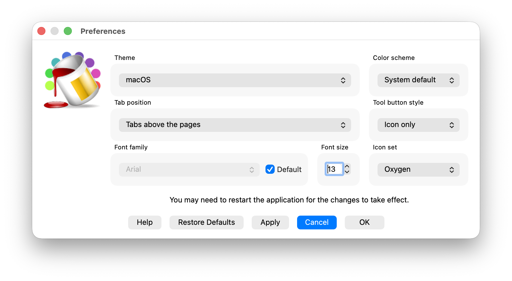

The Preferences window allows you to configure and personalize the appearance of the program's interface per user.

In particular, it is possible to modify these elements:
A list of available themes is presented, which depends on the operating system used. The fusion theme is available on all operating systems and allows for a consistent appearance whether using Windows, macOS, or Linux. In macOS, the native macOS theme is also available, in addition to the windows theme which follows the aesthetic standards of the old and outdated Windows95. In Windows, the windows11 and WindowsVista themes are available, besides fusion. All these themes are provided directly by the Qt libraries and might be modified or have others available when changing library versions.
Allows you to change the position of the tabs that open, for example, when accessing archives or activities. The available options are:
The default value is Tabs above pages
Allows you to change the base font used throughout the application. The combobox becomes active if Default is not checked and displays a list of the font families available on the system in use.
If checked, it sets the use of the system's default font and therefore does not allow selecting a custom font in the previous combobox.
Allows you to set the base font size used throughout the application. There may be constraints depending on the system and the theme in use, so it is not guaranteed that the set size will be fully respected.
In this combobox, it is possible to select whether to use the Light theme, Dark theme, or use the System default, which is the one chosen at the operating system level.
In this combobox, it is possible to select the visual behavior of the toolbar normally present at the top under the menus. The available options are:
The dafault value is Icons only
In this combobox, it is possible to select one of the icon sets available across all operating systems and used mainly for buttons, but also as an identifier for various dialog boxes like this one.
The following sets are available:
The default theme is Oxygen. All themes are freely available and have been downloaded from the website iconarchive.com.